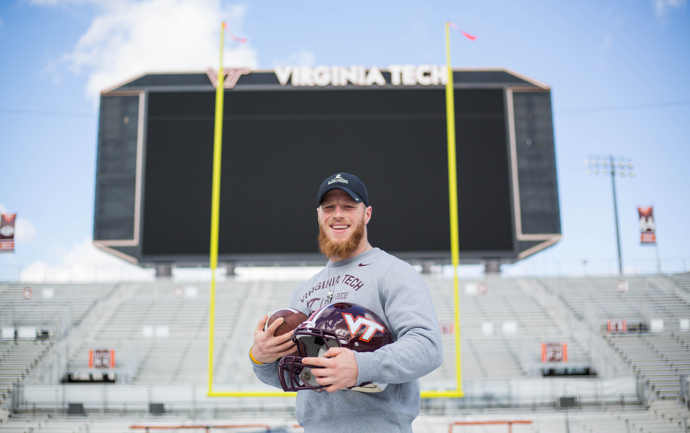
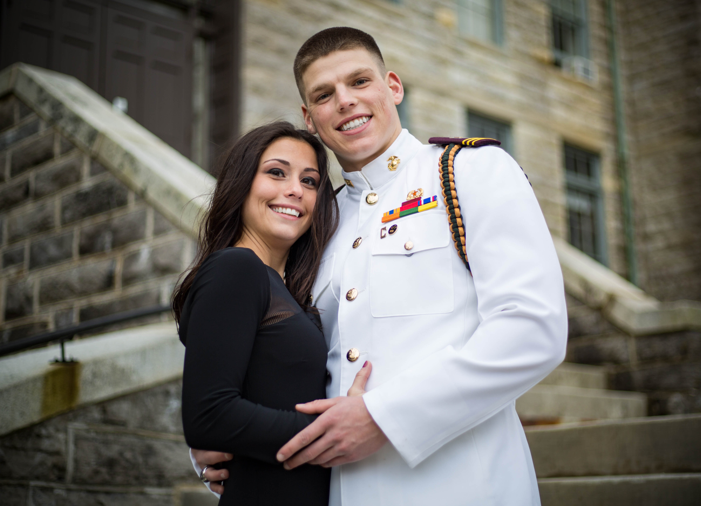
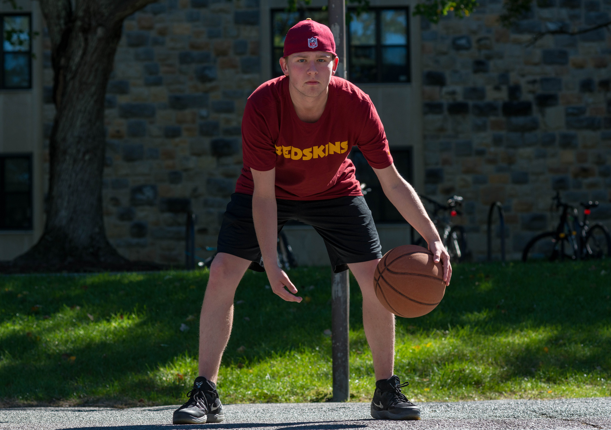

Goals
As an aspiring photojournalist, I am a staff photographer for both the HokieSports and Humans of Virginia Tech. I am also involved in Cru, a campus ministry that wishes to capture hearts and transform lives for Jesus Christ. My goal over the summer is to continue working on my fictional piece and improve my portrait photography skills. Below are some of my portrait photos.

Virginia Tech kicker Joey Slye poses for a picture after telling the inspirational story of his brother's battle with cancer.
 2016 Homecoming Queen, Becky Oswalt, stares in awe as the crowd gives a standing ovation
2016 Homecoming Queen, Becky Oswalt, stares in awe as the crowd gives a standing ovation

Joe and Loran celebrate their last of four Military Ball's together.
 Dustin Reynolds, Virginia Tech cadet, poses for a portrait at the Pylons.
Dustin Reynolds, Virginia Tech cadet, poses for a portrait at the Pylons.

Dillon poses for a photo while dribbling a basketball at Pritchard Quad.
 Mike and Ashley smile during engagement photos at Heritage Park.
Mike and Ashley smile during engagement photos at Heritage Park.